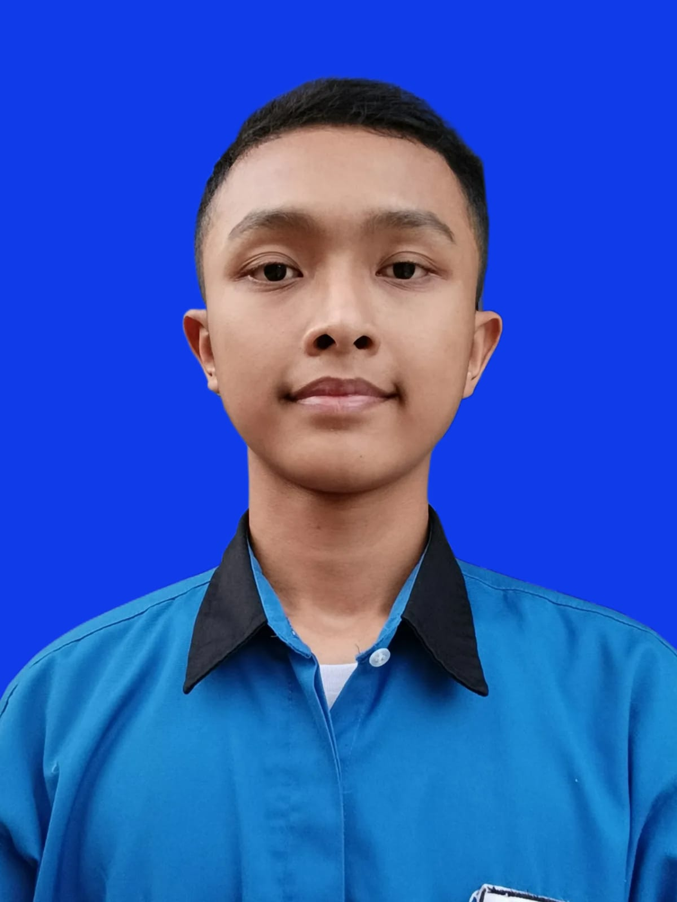

Informasi Pribadi :
Email : suffstok70@gmail.com
No HP : 0838-5416-2635
Kewarganegaraan : Indonesia
Alamat : Desa Becirongengor, Kec.Wonoayu, Kab.Siodrajo
Arifa Maulana Yusuf
- Pelajar -
Profil :
Saya adalah seorang pelajar SMK Krian 1 Sidoarjo jurusan Rekayasa Perangkat Lunak
dengan minat yang kuatdalam bidang drawing.
Saat ini, saya sedang mempelajari pemrograman dan komputer,
penggunaan Excel. Saya memiliki motivasi yang tinggi
untuk terus belajar dan berkembang, baik dibidang akademik maupun non-akademik.
| Pendidikan : |
Tahun : |
| SDN Becirongengor |
2015-2021 |
| SMPN 2 Wonoayu |
2021-2024 |
| SMK Krian 1 Sidoarjo |
2024-2027 |
Pengalaman :
- UJi Sertifikasi Axioo Class Program 2025 dalam program
Axioo Class Program yang berfokus pada keterampilan praktis
di bidang teknologi informasi dan perangkat keras komputer.
- Kunjungan Industri PT Tera Data Indonusa & Jakarta Smart City,
kegiatan kunjungan industri untuk memahami proses
kerja di bidang teknologi informasi dan pengelolaan data
- Seminar Public Speaking 2023, mengikuti seminar yang
membahas tenik dasar public speaking dan
berkomunikasi dengan audiens secara efektif.
Membantu perlengkapan pada acara seminar
Keahlian :
- Kemampuan kerja sama tim yang baik
- Disiplin dan Bertanggung Jawab
- Microsoft Office(Word,Excek,PPT)
- Manajemen waktu
- Silahkan Kunjungi : Instagram Yusuf